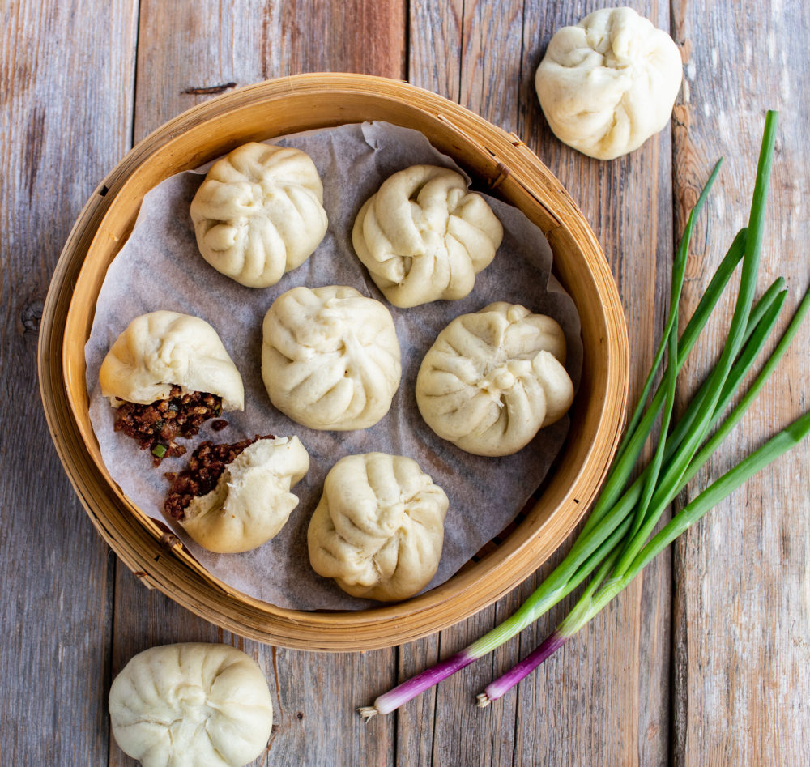

Ramen and Dumplings

Description
A warm and cheap dish that brings all the umami to the table.
Ingredients
- 1 packet flavored ramen of your choice.
- 1 package frozen dumplings of your choice.
Steps
- Set aside ramen seasoning packet and dumpling sauce packet if applicable. Cook dumplings and ramen per package instructions.
- Empty ramen seasoning packet into a bowl and add pepper, salt, garlic powder, minced garlic, minced onion, sesame seeds, and onion powder.
- When ramen is cooked, add minimal pasta water to dissolve seasoning in bowl, and drain pasta. Add pasta to bowl.
- Top ramen with dumplings and enjoy.